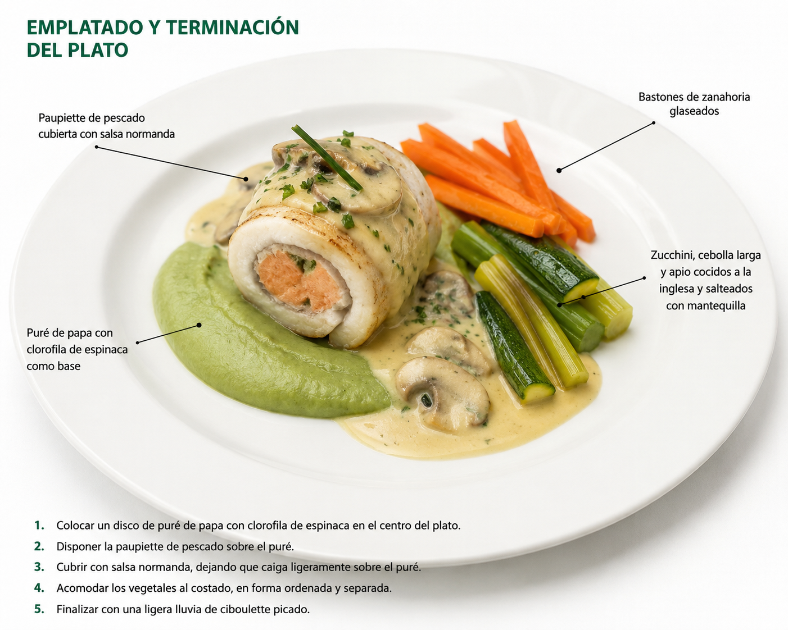
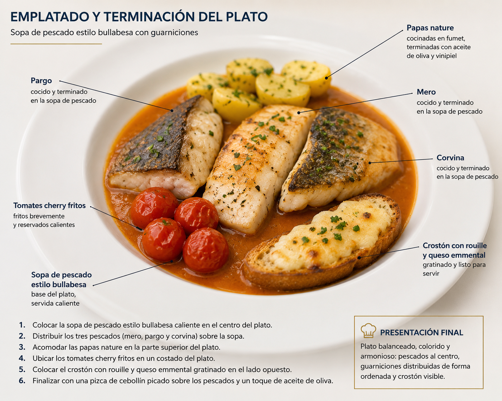

Brigada de cocina
Actividades de las dos recetas, por persona y con progreso en vivo.
Progreso general de las dos recetas
0 de 0 tareas · 0 %
Imágenes de las recetas
Referencia visual del resultado final de cada plato.

